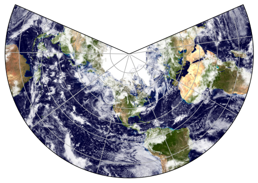
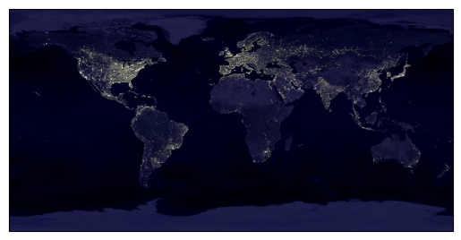

Blue Marble Map Background#
NASA compiles some of the best photos of the Earth, which makes for very nice map backgrounds. This blog post demonstrates how to access these photos and apply them as a map background.
You can find a variety of different high-quality images from NASA here. You can even choose which month of the year you want to show.
Import necessary packages:
import matplotlib.pyplot as plt # package for plotting
import cartopy.feature as cfeature # package for making maps
import cartopy.crs as ccrs # cartopy projections
import PIL # package for imaging manipulation
import urllib # package for working with urls
First, let’s define a function for plotting a map with a background so we can plot several different maps:
def plot_map(url, projection=ccrs.PlateCarree(), gridlines=False):
# Load the image
img = PIL.Image.open(urllib.request.urlopen(url))
# Alternatively download and load the image locally
# img = plt.imread('/local_path/blue_marble_next_generation.jpg')
# Define the image (covers the entire Earth)
img_extent = (-180, 180, -90, 90)
ax = plt.axes(projection=projection)
ax.set_global()
if gridlines:
ax.gridlines()
ax.imshow(img, origin='upper', extent=img_extent, transform=ccrs.PlateCarree())
As a first example, let’s use a view of the Earth for October as the background for a map with the plate carrée map projection:
url_october = 'https://eoimages.gsfc.nasa.gov/images/imagerecords/74000/74167/world.200410.3x5400x2700.jpg'
plot_map(url_october, projection=ccrs.PlateCarree(), gridlines=True)

We could as easily have chosen another map projection, e.g., the funky lambert conformal and a photo with clouds:
url_ocean_ice_cloud = 'https://eoimages.gsfc.nasa.gov/images/imagerecords/57000/57735/land_ocean_ice_cloud_2048.jpg'
plot_map(url_ocean_ice_cloud, projection=ccrs.LambertConformal(), gridlines=True)

NASA even has this cool photo of light polution:
url_nighttime = 'https://eoimages.gsfc.nasa.gov/images/imagerecords/55000/55167/earth_lights_lrg.jpg'
plot_map(url_nighttime)

Animation of two-axis tracker shading
Earth as a Rubik’s cube